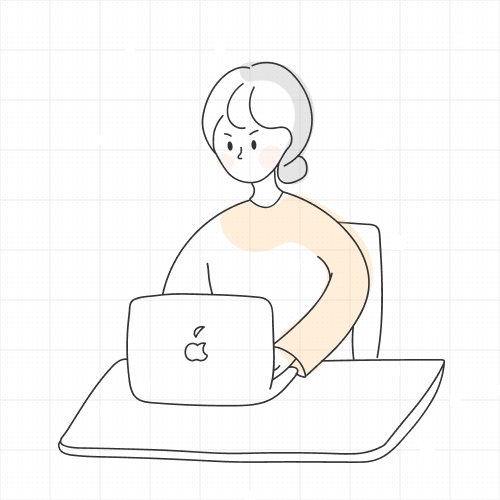

overview
'내가 좋아하는 것, 내가 잘하는 것은 무엇일까?' 라는 질문하나로
저의 특성과 제 자신이 한껏 녹아들어있는
저만의 세상을 그려낸 개인 웹사이트 'MINISIM' 입니다
concept
- MIN
- ISM
- MINISM
제 이름의 MIN 과 ~주의라는 뜻을 가진 ism 을 합쳐 저만의 또다른
세상을 만든다는 의미를 담아
'MINISM' 이라는 타이틀을 지어주었습니다
평소 그림그리기를 좋아하던 저의 특성을 살려
직접 그린 일러스트가 메인이 되는 디자인을 했습니다
color system
- #F5D1CC
- #FEF6E0
- #333333
부드럽고 수채화같은 분위기 연출을 위해
파스텔톤의 채도가 낮지만 명도가 높은 색들을 선정했습니다.
Design overview
-
- button
-
메인컬러를 사용한 디자인으로 메인페이지에서
주요메뉴 이동이 가능하게끔 했습니다
-
- Main illustration
-
언덕 위에 앉아 넓은 하늘과 풍경을 바라보는
저와 고양이의 모습을 일러스트 툴을 사용해 그렸습니다
-
- button
- 일러스트 툴을 이용해 작업한 버튼입니다
-
- Personality design
-
키워드에 맞는 일러스트를 이용해서
주제에 맞는 내용을 한 눈에 알아 볼 수있도록 했고
html 코드에서 아이디어를 얻어 키워드를 표현했습니다
-
- illustration
-
‘이야기를 그려내다’ 라는 컨셉에 맞게
캔버스와 화분을 배치에 화실같은 느낌을 연출했습니다
project
개인 웹사이트 제작
work
디자인 100% 코딩 100%
period
3Weeks
Typography
-
- KOREAN
- NanumSquare
나만의 이야기를 그려내다
나만의 이야기를 그려내다
나만의 이야기를 그려내다
-
- ENGLISH
- Montserrat
MINISM WEBSITE
MINISM WEBSITE
MINISM WEBSITE
illustration
- 
Epilogue
처음 프로젝트를 시작 할 때의 질문 '내가 잘하는 것이 무엇일까?'에
대한 답을 찾는 여정이였습니다.
웹이라는 공간안에 '나'를 풀어낸다는 것이 두렵고 막막하게만
느껴졌었지만,
나 자신을 또 다른 사용자라고 생각하며 고민하던 순간들이
즐거웠습니다.
나에대해 생각한다는 것, 사용자의 경험을 중요시하는 것에 대해 깊이
생각해가며
웹 세상에 한발자국 더 가까워 질 수 있던 시간이였습니다.
프로젝트를 마무리하며, 처음 제 자신에게 던졌던 질문의 답을 찾아낸 것
같습니다.